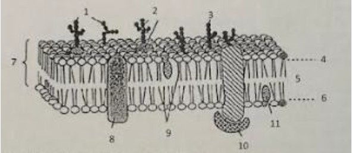

QCM : Génétique et Biocellulaire
Arbre généalogique d’une famille dont certains individus souffrent d’une maladie génétique. La fréquence des hétérozygotes dans la population générale est de 1/100.

1. D'après l'arbre généalogique :
Bonne(s) réponse(s) : B, C, D
2. Toujours d'après l'arbre généalogique :
Bonne(s) réponse(s) : B, E
3. On étudie la nature des gamètes des individus II-2 et II-3 :
Bonne(s) réponse(s) : A, D
4. Dans le cas d'une maladie récessive liée au chromosome X :
Bonne(s) réponse(s) : A, D
5. On croise des Drosophiles de lignée pure aux [ailes longues et aux yeux rouge] avec des Drosophiles de lignée pure aux [ailes vestigiales et yeux marron].
En F1 on obtient 100 drosophiles à [ailes longues et yeux rouges].
Le croisement test entre des femelles F1 et des mâles double récessifs donne : 629 individus [ailes longues et yeux rouges]; 633 individus [ailes vestigiales et yeux marron]; 152 individus [ailes vestigiales et yeux rouge] et 168 individus [ailes longues et yeux marrons].
Bonne(s) réponse(s) : B
6. On réalise deux croisements chez des poulets d'Andalousie et on indique leur résultat : des coqs blancs croisés avec des poules noires (tous parents de lignée pure) donnent 100% de poulets bleus, des poules bleues issues du 1er croisement sont croisées avec des coqs blancs (de lignée pure) et on obtient 50 % de poulet bleus et 50 % de poulets blancs.
On précise que ces caractères ne sont pas liés au sexe.
L'étude de ces résultats permet de déduire que les poulets bleus :
Bonne(s) réponse(s) : E
7. D'après les données et les résultats on peut affirmer que les poulets blancs :
Bonne(s) réponse(s) : A
8. Le croisement de poules bleues avec des coqs bleus doit donner normalement:
Bonne(s) réponse(s) : C, E
9. Concernant les organites :
Bonne(s) réponse(s) : D
10. Concernant les cellules :
Bonne(s) réponse(s) : A, B, C
11. Concernant le schéma ci-dessous :
Bonne(s) réponse(s) : B, D
12. À propos des transports membranaires :
Bonne(s) réponse(s) : B, D
13. Chez les Eucaryotes, la membrane plasmique comporte :
Bonne(s) réponse(s) : C, E, F
14. Concernant le système endomembranaire :
Bonne(s) réponse(s) : A, C
15. Concernant le noyau :
Bonne(s) réponse(s) : A
16. À propos du cytosquelette :
Bonne(s) réponse(s) : A, B, D
17. À propos des mitochondries :
Bonne(s) réponse(s) : A, B, C
18. À propos des mitochondries :
Bonne(s) réponse(s) : A, B
19. Concernant le cycle cellulaire :
Bonne(s) réponse(s) : B, C
20. Concernant le cycle cellulaire :
Bonne(s) réponse(s) : A, B
21. Concernant la mort cellulaire :
Bonne(s) réponse(s) : A, B, C, D